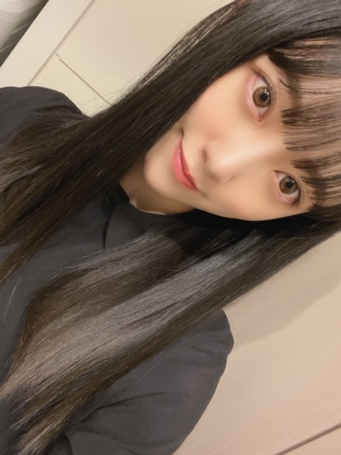
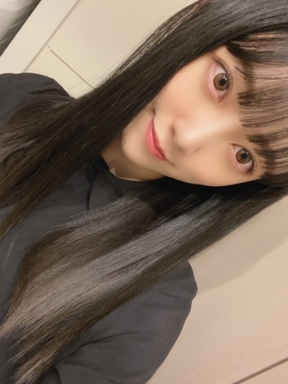

2020/0331Tue顔にほくろが増えてました

最近、髪伸びたね〜って
いろんな人によく言われます☺︎
ヘアアレンジができるので長いのも気に入ってます
どんな髪型が見たいか教えてください!


日奈子とみり愛は特に私のツボをおさえてくるので
ずっと笑ってます☺︎
面白い人好きだなぁ

今日はうたコン生放送です!
テレビ越しに皆さんに元気をお届けできるよう
精一杯パフォーマンスします☺︎
あ、さっそく髪型どうしよう?

見てください!
ではは

最近、髪伸びたね〜って
いろんな人によく言われます☺︎
ヘアアレンジができるので長いのも気に入ってます
どんな髪型が見たいか教えてください!
日奈子とみり愛は特に私のツボをおさえてくるので
ずっと笑ってます☺︎
面白い人好きだなぁ
今日はうたコン生放送です!
テレビ越しに皆さんに元気をお届けできるよう
精一杯パフォーマンスします☺︎
あ、さっそく髪型どうしよう?
見てください!
ではは
2020/03/31 11:36
コメント(325)
未央奈さん、ブログ更新ありがと〜！
忙しいのに、ありがとう、いつも元気もらってるよ！
昨日、サラサラヘアーかわいかったよん！
今のやつも似合ってる！楽しみにしてるね！
忙しいのに、ありがとう、いつも元気もらってるよ！
昨日、サラサラヘアーかわいかったよん！
今のやつも似合ってる！楽しみにしてるね！
こんにちはお疲れさま☺
タイトルの黒子どこに増えたん？✨
さてさて、髪型✨
俺は個人的に揺るぎなくショートカットが基本的に好きです☺(笑)
でも、自分自身が好きな良いって思うのが一番やと思いますよ☺
堀北コンビ良いね✨
うたコン見るよ！
髪型かあ～。
ポニーテールとか？
今AkBの懐かしい曲が頭をよぎり少し鼻歌していたよ(笑)☺
昨日のCDTVライブご苦労様✨
元気伝わったよ～✨
懐かしい曲は卒業メンバーの姿も思い出したり出来るから違った意味での楽しみもあります。
そして現メンバーでのパフォーマンスを乃木坂の歴史を紡いでいってほしいです☺
しあわせの保護色、ホンマに良い曲やね☺
ではではまたね✨
体調ホンマに気をつけてくださいね✨
こんな時やから特に自分を、メンバーを大切に、大事にしてくださいね☺
今はみんなもそれがしあわせやと思います☺
ほなね、堀ちゃん☺
タイトルの黒子どこに増えたん？✨
さてさて、髪型✨
俺は個人的に揺るぎなくショートカットが基本的に好きです☺(笑)
でも、自分自身が好きな良いって思うのが一番やと思いますよ☺
堀北コンビ良いね✨
うたコン見るよ！
髪型かあ～。
ポニーテールとか？
今AkBの懐かしい曲が頭をよぎり少し鼻歌していたよ(笑)☺
昨日のCDTVライブご苦労様✨
元気伝わったよ～✨
懐かしい曲は卒業メンバーの姿も思い出したり出来るから違った意味での楽しみもあります。
そして現メンバーでのパフォーマンスを乃木坂の歴史を紡いでいってほしいです☺
しあわせの保護色、ホンマに良い曲やね☺
ではではまたね✨
体調ホンマに気をつけてくださいね✨
こんな時やから特に自分を、メンバーを大切に、大事にしてくださいね☺
今はみんなもそれがしあわせやと思います☺
ほなね、堀ちゃん☺
こんにちは
更新ありがとう
未央奈最近カワイイって云うよりキレイなお姉さんになった気がするよ
今夜うたコン見るよ
いつも未央奈大好き
更新ありがとう
未央奈最近カワイイって云うよりキレイなお姉さんになった気がするよ
今夜うたコン見るよ
いつも未央奈大好き
未央奈さん、こんにちは。
初めてコメントします！
うたコン楽しみにしています！
髪型は、ハーフアップが見てみたいですね。
こういう髪型って思っても、その名前が分からないのでそういうのも勉強していこうと思います！
初めてコメントします！
うたコン楽しみにしています！
髪型は、ハーフアップが見てみたいですね。
こういう髪型って思っても、その名前が分からないのでそういうのも勉強していこうと思います！
ブログ更新ありがとう！
三つ編みカチューシャか巻いてるとこみたいなぁ♡
三つ編みカチューシャか巻いてるとこみたいなぁ♡
ブログ更新ありがとう
未央奈ちゃんのどんな髪型も好きだけど久しぶりにポニーテールみたい
未央奈ちゃんのどんな髪型も好きだけど久しぶりにポニーテールみたい
ポニーテール、ツインテール
先々週の工事中での神輿担いで、必死に
耐えていた時の堀ちゃんが可愛かったなぁ
うたコン観ますね
でははは☺️
今度歌番組とかでボブ風？みたいな髪型やってほしいです！
ショートもロングも好きだからロングのままだったらアレンジでショートもできるのかな、、？って思いました！
ショートもロングも好きだからロングのままだったらアレンジでショートもできるのかな、、？って思いました！
黒髪の堀ちゃん最高‼︎
堀ちゃんはどんな髪型でも似合うと思うけど
ショートヘアーが見たい！
堀ちゃんはどんな髪型でも似合うと思うけど
ショートヘアーが見たい！
今の髪型もすごく似合ってると思います
見たいのはポニーテールかな
ショートの未央奈さんも好きですがいろいろな未央奈さんが見られるのも楽しみです
うたコンではどんな髪型か楽しみ！
見たいのはポニーテールかな
ショートの未央奈さんも好きですがいろいろな未央奈さんが見られるのも楽しみです
うたコンではどんな髪型か楽しみ！
堀ちゃんのショートが好きです！
更新ありがとう！！
きいちゃんとの写真もありがとう！！
きいちゃんとの写真もありがとう！！
やっぱり前のボブが見たいです！！
ツインテールも見たいけどショートも捨てがたい
ブログ更新ありがとう
編み込みストレートで
夜勤なのでうたコン録画します。
編み込みストレートで
夜勤なのでうたコン録画します。
ブログ更新ありがとうございます
もう一度ショートの未央奈が見たいです！
もう一度ショートの未央奈が見たいです！
髪伸びるのめっちゃ早いよね？
絶対に面白さそう！！！
きいちゃんが変なノリをだしてみりあちゃんがのるっていうのが想像つくもん！
絶対楽しそう
堀北コンビの写真ありがとうねヾ(ﾟωﾟ)ﾉ゛
今日も生放送なのか！！
握手会はやれないけどテレビで堀ちゃんが映るの多いから本当に嬉しいし毎日可愛いし最高です
早くうたコンみたいな〜
どんな髪型にするんだろ！
めっちゃ楽しみやな〜
今日もブログ更新してくれてありがとう！！！！
こんなにもブログ更新してくれるなんてとっても嬉しいです！
絶対に面白さそう！！！
きいちゃんが変なノリをだしてみりあちゃんがのるっていうのが想像つくもん！
絶対楽しそう
堀北コンビの写真ありがとうねヾ(ﾟωﾟ)ﾉ゛
今日も生放送なのか！！
握手会はやれないけどテレビで堀ちゃんが映るの多いから本当に嬉しいし毎日可愛いし最高です
早くうたコンみたいな〜
どんな髪型にするんだろ！
めっちゃ楽しみやな〜
今日もブログ更新してくれてありがとう！！！！
こんなにもブログ更新してくれるなんてとっても嬉しいです！
ホクロが増えるのは、色が白い証拠。
髪が、それだけ長いと、お団子とかは、
その良さが解らずもったいないから、高
めのポニーテールなんてどう？
きぃちゃん、みりあちゃんに笑いのツボ
をおされて、健康体？
うたコン、承知しました。
元気、有り難く頂戴致します。
髪が、それだけ長いと、お団子とかは、
その良さが解らずもったいないから、高
めのポニーテールなんてどう？
きぃちゃん、みりあちゃんに笑いのツボ
をおされて、健康体？
うたコン、承知しました。
元気、有り難く頂戴致します。
未央奈更新ありがと〜！
どんな髪型でも似合うから羨ましいなぁ。。
でも、ボブが好きだからボブにしてほしい‼︎
うたコン頑張ってね！
ずっと家にいて暇なので宿題ください‼︎
どんな髪型でも似合うから羨ましいなぁ。。
でも、ボブが好きだからボブにしてほしい‼︎
うたコン頑張ってね！
ずっと家にいて暇なので宿題ください‼︎
ホクロが増えたんだ？
日村さんは美女のホクロを線で結び
その線を地図に当てはめドライブ
するのが趣味らしいです。


日村さんは美女のホクロを線で結び
その線を地図に当てはめドライブ
するのが趣味らしいです。
ポニーテールがみたいです！
みおなほんとに可愛い
楽しみにしてます！
みおなほんとに可愛い
楽しみにしてます！
未央奈さん、ブログ更新ありがとうございます！！！！今日うたコン絶対見ます！
昨日のCDTVの時の未央奈さんの髪型が可愛かったです！自分は未央奈さんのロングヘアとショートヘア、どっちも好きです！(でも、もう1回ショートが見たい〜)
じゃ、またブログ更新した時に〜…zzZ (・▽・)／ｼﾞｬﾏﾀ
昨日のCDTVの時の未央奈さんの髪型が可愛かったです！自分は未央奈さんのロングヘアとショートヘア、どっちも好きです！(でも、もう1回ショートが見たい〜)
じゃ、またブログ更新した時に〜…zzZ (・▽・)／ｼﾞｬﾏﾀ
ハーフアップおだんごみたいです！
チャァオ～～!☆彡
プリンセスみおちゃん❕❤️❤️❤️❤️❤️笑顔
１番下写メ～～～～⤴️⤴️⤴️
横顔、とっても綺麗だよ～～～⤴️⤴️❕❤️❤️❤️❤️❤️笑顔
彼女ナウみたい❕❤️❤️❤️❤️❤️笑顔
みおちゃん❕・・・
日奈子ちゃんと一緒に2人で おんぷちゃんヘア～～が見たいです❕❤️❤️❤️❤️❤️笑顔
(*^▽^)/／／／❇️❇️❤️❤️❤️
❇️おすまし！より⚜️❇️彡
繋げるほくろがまた1つ( ˶´⚰︎`˵ )キュキュ
ブログ更新ありがとう！
昨日のCDTVみたよ！髪色結構暗めなんだね！
黒かと思ったけど違うんだね
すごく似合ってる！
今日の髪型も楽しみ！
昨日のCDTVみたよ！髪色結構暗めなんだね！
黒かと思ったけど違うんだね
すごく似合ってる！
今日の髪型も楽しみ！
未央奈、ブログ更新ありがとう〜
未央奈はどんな髪型も似合うと思うよ
ロングもショートも好き
今日の髪型、注目します
いろんな髪型似合うの羨ましい〜
私は生まれてからずっとショートです
ホクロかぁ…。私の顔に目立つホクロがあって…コンプレックスです
堀北の写真いっぱいで嬉しい
大好きです
身体気をつけて頑張ってね
もるもっと
未央奈はどんな髪型も似合うと思うよ
ロングもショートも好き
今日の髪型、注目します
いろんな髪型似合うの羨ましい〜
私は生まれてからずっとショートです
ホクロかぁ…。私の顔に目立つホクロがあって…コンプレックスです
堀北の写真いっぱいで嬉しい
大好きです
身体気をつけて頑張ってね
もるもっと
更新待ってました〜⸜( ॑꒳ ॑ )⸝⸜( ॑꒳ ॑ )⸝
未央奈ちゃん髪めっちゃ伸びたよね
私は髪短い未央奈ちゃんも
長い未央奈ちゃんも大好き
今日のうたコンもちろん見るよ✩.*˚
次の更新も待ってます
未央奈ちゃん髪めっちゃ伸びたよね
私は髪短い未央奈ちゃんも
長い未央奈ちゃんも大好き
今日のうたコンもちろん見るよ✩.*˚
次の更新も待ってます
昔みたいなボブぐらいの髪型の未央奈がみたーーい
ブログ更新ありがとう！
ロングも可愛くて大好きですが、個人的にはショートをもう一度見たいです…
髪が伸びたところすみません…
ロングも可愛くて大好きですが、個人的にはショートをもう一度見たいです…
髪が伸びたところすみません…
私は髪型三つ編みかフィッシュボーンがいいなぁ！！久しぶりに見てみたい！！うたコンすごく楽しみにしてるね！！みおちゃん見つけるぞー！！
ももんが
ももんが
髪型ショートにして‼️
ブログありがとー。
新しい髪色もめちゃめちゃオシャレ。
個人的にはハーフツイン、ハーフアップが好きです。
みおちゃんの何気ないひと言で元気が出るよ。
うたコン、録画になっちゃうけど観るね。
新しい髪色もめちゃめちゃオシャレ。
個人的にはハーフツイン、ハーフアップが好きです。
みおちゃんの何気ないひと言で元気が出るよ。
うたコン、録画になっちゃうけど観るね。
こんにちは。ブログ更新ありがとうございます。
女性の髪形って、いろいろ試せて楽しいですよね。今晩はハーフツインなんかどうでしょ。未央奈ちゃんの顔立ちだったら、可愛い系もいけると思います。
ではまた。
女性の髪形って、いろいろ試せて楽しいですよね。今晩はハーフツインなんかどうでしょ。未央奈ちゃんの顔立ちだったら、可愛い系もいけると思います。
ではまた。
ブログ更新ありがとう！
サラサラロングヘアー、プリンセスみたいで本当に可愛い！
色んなアレンジしてくれるのも嬉しいです︎☺︎
編み込みカチューシャとおんぷちゃんヘアまたしてほしいな。
編み込みして髪を下ろしてるヘアもいつか見たいです！
未央奈ちゃんのブログとか歌番組にたくさん元気をもらってます。
いつもありがとう！
うたコン頑張ってね！身体に気を付けてね！
サラサラロングヘアー、プリンセスみたいで本当に可愛い！
色んなアレンジしてくれるのも嬉しいです︎☺︎
編み込みカチューシャとおんぷちゃんヘアまたしてほしいな。
編み込みして髪を下ろしてるヘアもいつか見たいです！
未央奈ちゃんのブログとか歌番組にたくさん元気をもらってます。
いつもありがとう！
うたコン頑張ってね！身体に気を付けてね！
堀北コンビ大好き！きぃちゃんとあった面白い話も聞きたいな～(*´-`)...
忙しくなければ編み込んだ髪型を見てみたい！
忙しくなければ編み込んだ髪型を見てみたい！
まさかの・・・
ブログタイトルに全然触れてない内容！
最高過ぎだわ！やるねぇ！花丸あげちゃう(笑)
ブログタイトルに全然触れてない内容！
最高過ぎだわ！やるねぇ！花丸あげちゃう(笑)
未央奈ちゃんおこんばんは！
髪型のリクエストかぁ。では、明日から4月という事で新生活っぽい髪型。見ててウキウキする感じ
漠然としててごめんね^ ^
髪型のリクエストかぁ。では、明日から4月という事で新生活っぽい髪型。見ててウキウキする感じ
漠然としててごめんね^ ^
高いポニーテールとかハーフアップでお団子とかみたい！
サヨナラの意味の紅白のななみんの髪型とか！
サヨナラの意味の紅白のななみんの髪型とか！
ブログ更新、ありがとー！
希望の髪型は、
ちょくちょくモバメで見せてくれる、
デコだし未央奈！
歌番組で沢山活躍する姿見れて、
充実の春先！
希望の髪型は、
ちょくちょくモバメで見せてくれる、
デコだし未央奈！
歌番組で沢山活躍する姿見れて、
充実の春先！
ライブライブの未央ちゃんも可愛いかったです
困った時はやっぱりポニーテールでお願いします
身体に気をつけてね
困った時はやっぱりポニーテールでお願いします
身体に気をつけてね
こんにちは！
確かに綺麗な黒髪ロング。
せっかく伸びたから、ゆるく後ろでまとめてしっとりてのもありかな～
安定の堀北コンビ！！
うたコン観るね♪
確かに綺麗な黒髪ロング。
せっかく伸びたから、ゆるく後ろでまとめてしっとりてのもありかな～
安定の堀北コンビ！！
うたコン観るね♪
未央奈ちゃん昨日も可愛かったよ
黒髪ストレート、お人形さんみたいで素敵だった！
でもね、この前巻き髪でハーフアップしてたのがほんとにどストライクすぎるからまた見たいな〜
欲を言えば、7thバスラとかSingOut!の時くらいのボブも見たいし、昨年の夏くらいの茶髪っぽくてシースルーバンクでポニテしてるのも見たい！！！
うたコン楽しみにしてるね♪
黒髪ストレート、お人形さんみたいで素敵だった！
でもね、この前巻き髪でハーフアップしてたのがほんとにどストライクすぎるからまた見たいな〜
欲を言えば、7thバスラとかSingOut!の時くらいのボブも見たいし、昨年の夏くらいの茶髪っぽくてシースルーバンクでポニテしてるのも見たい！！！
うたコン楽しみにしてるね♪
未央奈ブログありがとう！
今の髪型と髪色、めっちゃ可愛い。
うたコン楽しみにしてます～
どんな髪型で登場するのかも注目してるね！
今の髪型と髪色、めっちゃ可愛い。
うたコン楽しみにしてます～
どんな髪型で登場するのかも注目してるね！
未央奈可愛い～
三編みのおさげとか、おだんごを見たいな～！
三編みのおさげとか、おだんごを見たいな～！
こんにちは～
、、今日は、、曇り空だね～
、、ほくろは、、美人の徴～しるし、、だからね～
、、じゃあ、またね～
、、今日は、、曇り空だね～
、、ほくろは、、美人の徴～しるし、、だからね～
、、じゃあ、またね～
今日のうたコン見ます！
堀北大好きです！
堀北大好きです！
ブログ更新ありがとう
髪型凄く似合って、可愛すぎる！
体調に気を付けてください
髪型凄く似合って、可愛すぎる！
体調に気を付けてください
ショートヘアもう一回してほしいです。


大好物 来ちゃった... 横顔。
見るのは髪型でしたね ごめんなさい。